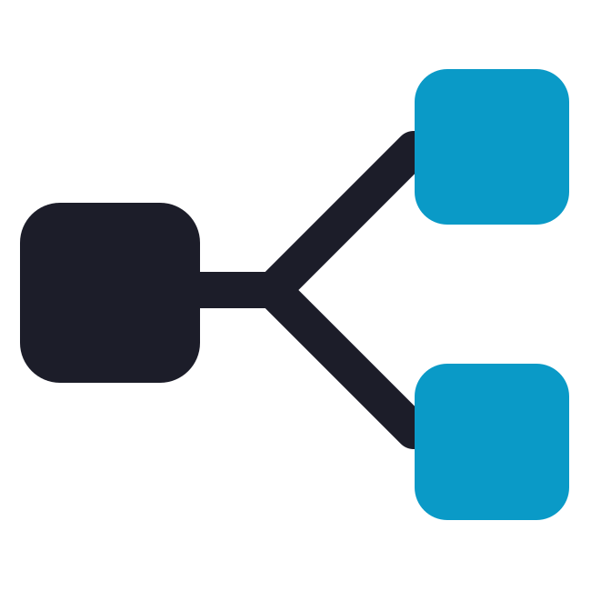

Design, validate, publish and monitor the configurations of the platform's services.
Workflows of the workflow-manager service: edit, publish, run and follow their executions.
workflow-manager
Orchestrators and workflows of the process-orchestrator service: edit, publish, start flows and follow them.
process-orchestrator